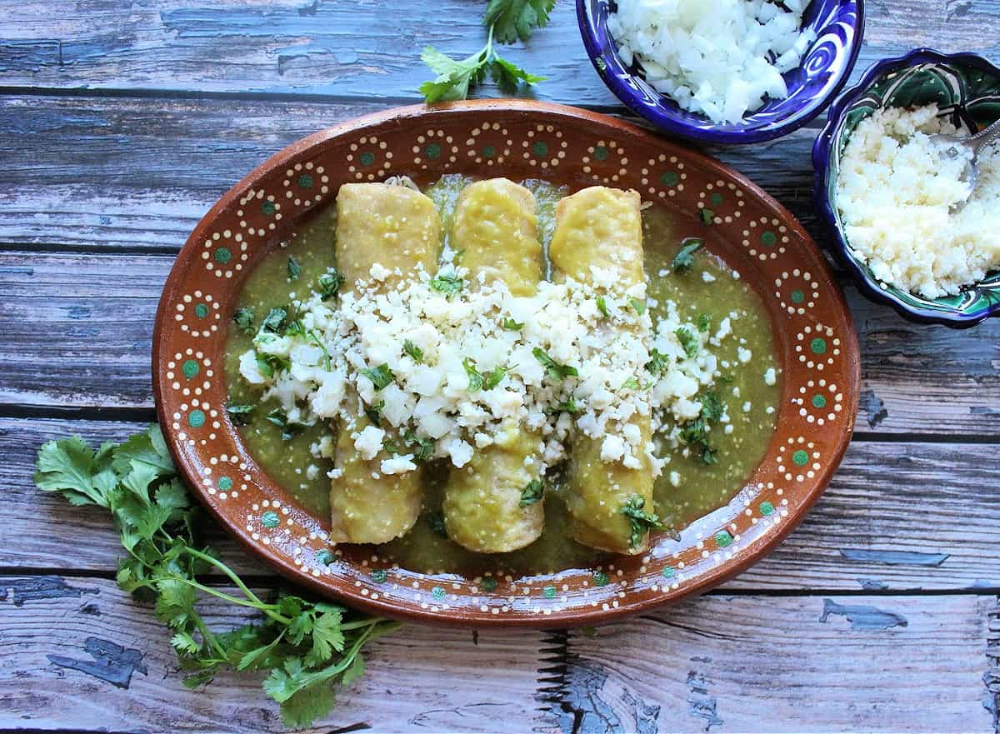

Double Chocolate Cookies
Origin: Michigan Source: Family Recipe Category: Dessert
My daughter learned to make these cookies at a baking camp at Zingermanns and has tweaked the recipe to fit the taste buds of her siblings. They are extremely sugary so the salt helps to balance it. Note, these cookies are best eaten very quickly.
Recipe Ingredients
- Unsalted butter
- Granulated Sugar
- Packed light or dark brown sugar
- Large egg
- Pure vanilla extract
- Semi-sweet chocolate chunks (melted)
- All-purpose flour
- Natural unsweetened cocoa powder
- Baking soda
- Salt
- Semi-sweet chocolate chunks
Recipe Steps
- In a mixing bowl cream together the butter, granulated sugar, and brown sugar
- Add the egg and vanilla extract and beat well
- Add the melted chocolate
- In a separate bowl combine the flour, baking soda, cocoa powder and salt
- Combine the wet and dry ingredients
- Add the unmelted chocolate chunks.
- Form 15 cookies and place on a baking sheet.
- Cook for 12 to 13 minutes at 350 degrees.
Additional Food images


Matcha Cookies
Origin: Japanese Source: https://www.justonecookbook.com/green-tea-white-chocolate-cookies/ Category: Dessert
These cookies have the perfect flavor balance of the earthiness from the matcha and the sweetness and creaminess from the white chocolate chips. They are crispy and sweet, perfect for an afternoon snack or dessert. Enjoy with a cup of tea!
Recipe Ingredients
- All purpose flour
- Matcha powder
- Unsalted butter
- Kosher salt
- Confectioners sugar
- Egg yolks
- White chocolate chips
Recipe Steps
- Combine flour and matcha powder in large bowl Sift the flour and matcha powder
- Beat softened butter until smooth and creamy
- Add salt and blend
- Add sugar and beat until soft and light
- Add egg yolks and mix until well combined
- Gradually add flour and matcha mixture and mix until well combined
- Add chocolate chips and mix until incorporated
- Divide dough into two pieces. Shape each piece into cylinders about 1.5in in diameter
- Wrap logs in plastic wrap and chill in fridge for at least two hours
- Slice into ⅓ inch rounds and place on a baking tray lined with parchment paper
- Bake at 350 degrees for 15 minutes
Additional Food images


Enchiladas Verdes de Pollo
Origin: Mexico Source: https://inmamamaggieskitchen.com/enchiladas-verdes-de-pollo/ Category: Main Dish This is one of my favorite dishes to eat, especially my mother’s recipe but I do not know it or have access. There are a variety of recipes to make this dish and this happens to be different from my mother's because she does not place the enchiladas in the oven. I still think that it is a good recipe that should get you something similar.
Recipe Ingredients
For the Salsa:
- 2 lbs tomatillos (about 16 tomatillos)
- 4 serrano peppers (stem removed)
- 2 garlic cloves
- ¼ onion roughly chopped
- 4 cups water (enough to cover the tomatillos)
- 1 bunch cilantro
- 1 teaspoon salt
- 1 tablespoon olive oil
For the Enchiladas:
- 1 cup canola oil
- 2 cups shredded chicken
- 12 corn tortillas
For the Toppings:
- crema Mexicana as desired
- crumbled queso fresco (or cotija)
- diced raw onion as desired
- chopped cilantro as desired
Recipe Steps
For the Salsa:
- Place the tomatillos, garlic, serranos, onion, and water in a stockpot.
- Cover and bring to a boil
- Simmer for 7-10 minutes
- Discard water
- Remove the ingredients from the stock pot and into the blender.
- Add salt and cilantro to the blender
- Blend until smooth.
- Heat up oil in the same stock pot used to cook the salsa
- Pour in the salsa verde and cook for 10 minutes.
- Stir occasionally.
- Heat up oil in a frying pan.
- Fry the tortillas. 1 minute on each side.
- Place on a paper towel to drain any excess oil.
- Repeat with all the tortillas.
- To assemble, place a tortilla in a baking dish, and using your best judgment add about 2 tbsps shredded chicken.
- Roll up the tortilla.
- Make sure the seam side is down.
- Repeat until with the remaining tortillas.
- Heat up the oven to 375 degrees F.
- Cover the tortillas with aluminum foil and place in the oven.
- Bake for 15 minutes.
- Keep in a warm oven until ready to serve.
- Pour a generous amount of the salsa verde on the plate.
- Add the chicken enchiladas to a plate.
- Pour more sauce on top.
- Add the desired toppings: crema Mexicana, queso fresco, cilantro, and onion.
For the Enchiladas:
Additional Food images